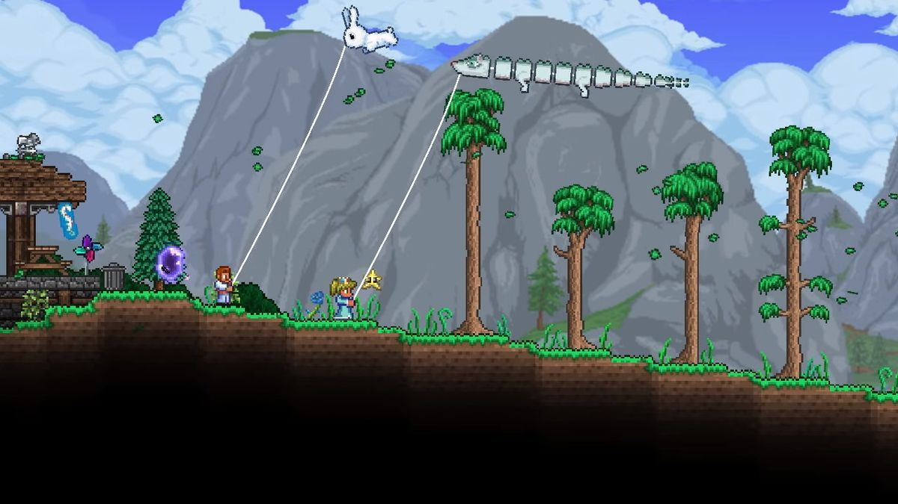
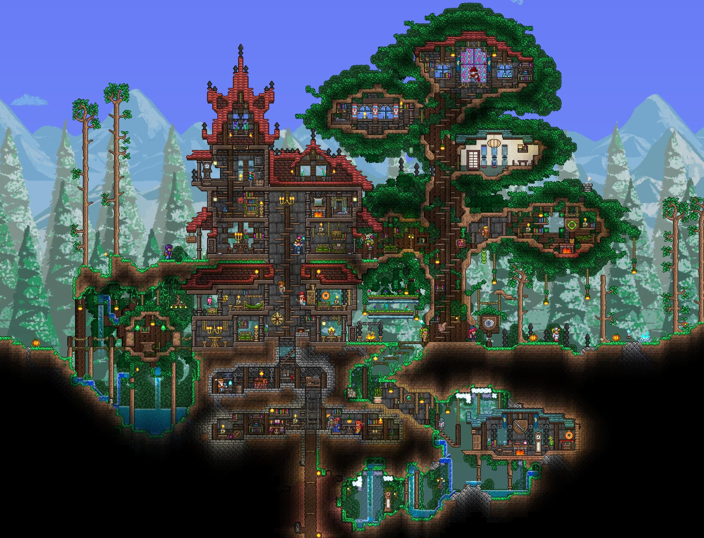

Terraria is a 2-D sandbox, action-adventure, role-playing video-game developed and created by indie game company Re-Logic. It features simple pixelated graphics with an upbeat electronic soundtrack that creates a different atmosphere for each new biome. Terraria was released on May 16, 2011 and sold 50,000 copies on it's first day. It would eventually become one of the best selling video games of all time with 70 million copies sold as of May 2026.

Terraria offers nearly infinite replayablilty with unique boss battles and enemies, smooth progression, and countless items to build and create with. Players can find and explore many different biomes and sub-biomes throughout the world. The game has a total of 32 different bosses to fight and defeat with over 300 enemies aswell. Players are free to do just about anything, whether it be progressing through the game as fast as possible, building an otherworldly base, or spending 2 hours fighting the same boss for one item. The only limit is your imagination.
"©"; 2026 Ruben Tejeda. All Rights Reserved.